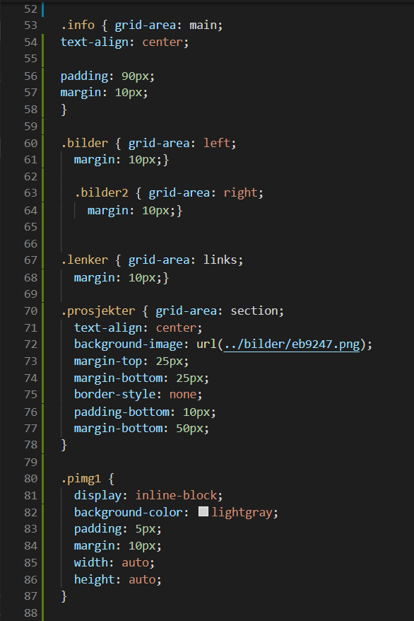
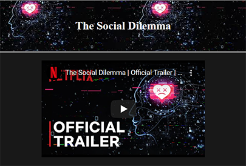

Litt om meg
Jeg heter Andreas og er 16 år. Jeg går på Amalie Skram vidregående skole på linjen "Informasjonsteknologi og medieproduksjon". Hobbyene mine er å programere, å spille video spill og å spille gitar. Og dette er stededt der jeg kommer til å legge ut alle prosjektene jeg har i de programfagene jeg har, og kansje noen av fellesfagene


Prosjekter

"The sosial dilemma" er en film som handler om hvordan sosiale medier kontrolerer oss i hverdagen. I dette prosjektet skriver jeg litt om hvorden dette ikke er bra og hvordan jeg syntes at det bør endres